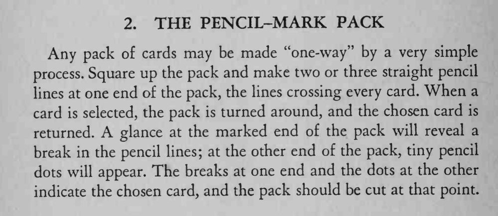

观众抽牌放回后，魔术师不必翻牌，就能准确地把它找出来。
铅笔要削尖，线画得细才不显眼，两端标记要对照着看。

Any pack of cards may be made "one-way" by a very simple process. Square up the pack and make two or three straight pencil lines at one end of the pack, the lines crossing every card. When a card is selected, the pack is turned around, and the chosen card is returned. A glance at the marked end of the pack will reveal a break in the pencil lines; at the other end of the pack, tiny pencil dots will appear. The breaks at one end and the dots at the other indicate the chosen card, and the pack should be cut at that point.